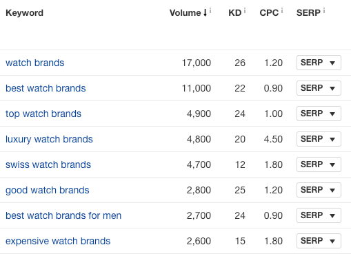
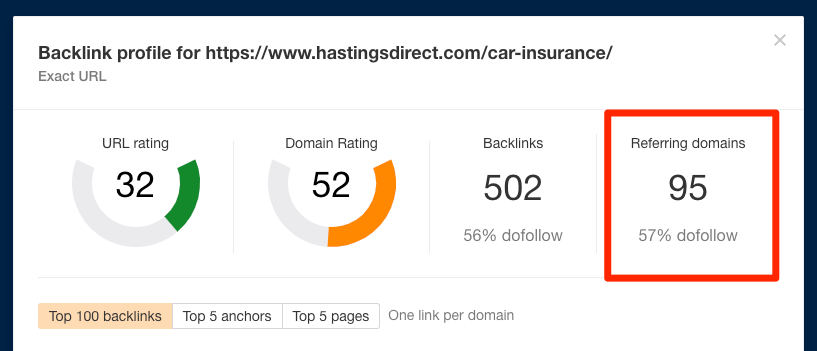

如何让网站排名进入谷歌首页 [互动指南]¶
隐藏尸体的最佳位置是谷歌的第二页。
你可能以前听过这句话。这是SEO业界流传的一个笑话，因为只有0.78%的用户会点击谷歌第二页的结果。
把笑话放一边，下面这是现实：
如果你的排名在第二页或更靠后的页面，那么你基本上是无法被看到的。
在本指南中，你将学习如何通过7个简单的步骤解决首页排名问题，以及了解为什么排名首页也不一定是你的最终目标。
你是做本地化业务的吗？
如果你在搜索目标关键词时，在结果中看到了“地图展示”，你可以选择阅读这个指南。
https://www.youtube.com/watch?v=FUYAe5ROeP0
在我们开始之前…¶
下面这些不是必需条件，但是为了最大程度地利用本指南（并获得在第一页排名的机会），你的网站应该：
- 移动端友好;
- 加载速度块;
- 使用简单（比如简洁的导航、漂亮的用户体验等等）;
- 加密 (例如使用HTTPS 而不是 HTTP);
- 结构分明;
- 可以解决SEO技术类问题。
如果你的网站不符合上述标准，这些因素不仅会直接影响你在谷歌的排名，同时会导致执行以下教程的难度增加。
下面是整个过程的流程图：
准备好了吗？让我们开始吧
步骤 #1 选择一个关键词¶
你们中的大多数人可能已经做过这一步了。但是如果你还没有做过，则需要选择一个需要上首页的关键词。
我已经完成这一步了
接着 步骤 #2.
我还没有做这一步
请查看我们的 关键词研究指南。
步骤 #2 查看竞争对手¶
这就好比你想在 Walmart（沃尔玛）旁边建立一个杂货店一样，在竞争激烈的情况下，是很难在谷歌的首页排名的。因此，下一步就是要了解竞争对手——首先要面对的对手是谁。
为此，请搜索你的关键词并查看第一页的结果。
如果它们全部来自知名的大品牌，并且你是一家没人听说过的创业公司，那么进入首页将非常艰难——至少在短期内是如此。
例如，你可以查看这个词 “dresses（礼裙）“的搜索结果：
每个结果都来自知名的品牌——Macy’s（梅西百货）, Nordstrom（诺德斯通）, Missguided，Boohoo等等。
译者注：
Missguided：2009年在美国纽约成立的知名女装品牌
Boohoo：知名英国的在线零售品牌
这清楚地表明，那些希望购买新衣服的人希望从一个知名的老品牌那里购买。一个新的品牌网站想参与这个关键词的排名，门槛会很高，即使是对最聪明的SEO人来说也是如此。
如果你并不知道你的行业内大牌的对手有哪些的话，你可以将关键词粘贴到 Ahrefs的Keywords Explorer（关键词分析）中，拖动到最后的SERP overview（SERP概览）板块，并且查看排名网站的Domain Rating （域名评分）。

这里展示的是排名靠前域名的评分，分数值从0–100。
至关重要的是，并非所有大品牌都拥有高评分，但绝大部分都有。例如，你可以在这里看到Missguided的域名评分只有70，但这仍然是非常高的。
你可以在我们免费的Website authority checker（网站权威检查）工具中和你的对手进行分数的对比。
一般而言，与当前首页排名页面的评分相比，如果你的网站该数字越低，排名就越困难。
我在首页上看到了和我评分相近的品牌网站。
即便只有2到3个网站，请查看 步骤 #3.
我在首页上只看到大品牌的网站。
在首页上排名会很困难，但并非不可能。
如果此关键词的排名对你的业务至关重要，那么你仍然应该为它排名。请注意，你可能不会很快的参与排名，同时可能需要构建比竞争对手更多的外链。
如果你的目标是在中短期内排名，回到 步骤 #1 选择一个更简单的关键词，比如“plus size maxi dresses（加大码的长裙）” ，而它的首页竞争对手都是一些中小型的品牌。
步骤 #3. 选择或制作一个页面（满足搜索需求）¶
重点是，你需要认识到谷歌是针对网页进行排名的，而不是网站。
举个例子，比如我们用两个页面分别参与了 “where to get backlinks（哪里获取外链）” 以及 “where to buy backlinks（哪里购买外链）“的首页排名。
现在，你想在谷歌上排名的页面可能是你的主页，但这不一定非得是你的主页。这可以是任何页面。只需确保它符合搜索意图即可（谷歌 希望 为你满足搜索需求的内容页面进行排名）。
如何检查？将页面与首页上已排名的内容进行比较。
如果你的页面与搜索意图满足“3C标准”，则将更容易获得排名：
- C ontent-type（内容类型）;
- C ontent format（内容格式）;
- C ontent angle（内容角度）
让我们拆分讲解。
Content-type（内容类型）¶
搜索结果中最常见的内容“类型”，通常是以下之一：
- 博客页面；
- 产品页面 （关于单个产品的详情页）;
- 分类页面 （多个相同属性产品的页面）;
- 专题页面 （投放产品或服务的页面）。
通过查看页面标题和URL，你就可以了解它们的内容类型。
举个例子，我们可以到参与 “how to make pancakes（如何做煎饼）”排名的基本都是博客页面…
… 参与 “buy MacBook Pro（购买苹果笔记本Pro）”排名的都是产品页面：
Content format（内容格式）¶
下面是排名靠前的页面中占主导地位的“内容格式”。它主要适用于一些特殊的内容展示模式。常见的包括：
- “
How-to” guides（如何类教程） * Step-by-step tutorials（步骤指南） * List posts（列表类文章） * Opinion pieces（意见片段） * Reviews（评价） * Comparisons（对比）
再来看煎饼菜谱的例子，我们可以看到基本都是“how to”类型的内容…
… 当我们看到 “blogging tips（博客建议）”的排名结果，则是这种列表类文章：
Content angle（内容角度）¶
下面排名靠前的页面中最常见的“内容角度”。它比类型和格式更难量化，但从本质上讲，它是首页排名的主要指标。
举个例子，大多数参与 “blogging tips（博客建议）”排名的都是针对新手博主的。
结果就是，如果你的文章是关于“将博客收益从$5k 提高到 $10k”的话，那么就很难参与排名，因为这不是新手想看到的结果。
我的页面满足搜索意图
进入 步骤 #4.
我的页面不能满足搜索意图
你有三个选择：
- 根据搜索意图编辑你的页面；
- 创建一个满足搜索意图的页面；
- 更换关键词，回到 步骤 #1，选择一个更合适的目标关键词。
无论你做什么，都不要试图将无关的页面塞进搜索结果中，这注定是徒劳的。
步骤 #4 确保你的内容涵盖了所有话题方向¶
仅拥有符合搜索意图的内容是不够的。谷歌的目的是在首页展示最相关，最有用的结果，所以你还需要在首页上争抢一席之地
如何确保你的内容符合要求？
你可以通过涵盖搜索者想知道和期望看到的所有内容。
举个例子，比如说你想参与 “best watch brands（最好的手表品牌）”的排名。
我们通过对搜索意图的分析可以了解到，你需要写一个列表类的博客页面，并且主要针对一些奢侈品牌。
有可能你已经有这样的一个页面了，需要重新写吗？现在它是否涵盖了搜索者想了解的所有手表品牌和类别？
最简单的方法就是，将你的内容和排名靠前的内容作比较。
例如，如果你查看“best watch brands（最好的手表品牌）”排名较高的页面，你会发现它们都提到了Rolex（劳力士）。

如果你没提及它的话，那么你应该把它加入到你的内容的中。
上面，这是一个显而易见的例子。但排名靠前的页面上页提到的其他的一些品牌，包括：
- Tag Heuer（泰格豪雅）;
- Chopard（瑞士萧邦）;
- Omega（欧米伽）;
- Cartier（卡迪亚）。
通过提及这些内容，你不仅可以为搜索者提供他们想要和期望看到的东西，还可以潜在地提高内容在谷歌眼中的相关性。
重要
这不仅仅是“添加关键词”那么简单，而是关于增加内容的深度，以及实用性。不要为了出现这些内容而将这些关键词和词组强行加入你的内容中。
如果你想做的更深入一些，可以借助 Content Gap（内容差距机会）对页面进行分析。
你只需要将一些排名不错的页面URL粘贴到Ahrefs Content Gap（内容差距机会）工具中即可。
小提示.
确保你在下拉框中选择的是“URL模式”，同时最下方留空。
确保你在下拉框中选择的是“URL模式”，同时最下方留空。
点击 “Show keywords（展示关键词）“你就可以看到这些页面参与排名的关键词。

同样，不要将其视为一个简单的关键词列表，你需要深入了解人们在谷歌上输入此关键词时想要看到的内容。
在这个例子中我们可以了解到：
- swiss watch brands（瑞士手表品牌）;
- luxury swiss watches（瑞士奢侈手表）;
- mechanical watch brands（机械手表品牌）;
- french watch brands（法国手表品牌）。
因此，你需要确保在内中涉及到这些，甚至可以使用某些作为内容的副标题。
我的内容都涵盖了所有话题
进入 步骤 #5.
我的内容并没有涵盖所有话题
按照上面的流程丰富你的内容。如果这样做要花费很长时间，那么就返回 步骤 #1 并选择一个简单的关键词。
步骤 #5 估算你需要的外链量¶
外链是一个非常重要的排名指标。不仅谷歌这么说了，同时行业中的各项研究也表明自然搜索流量和外链有着非常强的关系。
研究中也包括 我们关于10亿页面的研究。
因此，拥有的外链质量越高，你在谷歌首页上排名的机会就越高。
问题是，你如何知道需要多少个外链？
下面就是事实：
由于并非所有外链都是一样的，因此无法确定确切的数字。但是我们可以得到一个粗略的估计。
你可以借助 Ahrefs Keywords Explorer（关键词分析），搜索你的目标关键词， 并查看 Keyword Difficulty（关键词难度） 指标下方的数字。
这是一个超级粗略的估计，所以你需要辩证的去看待这个指标。
要获得更准确的估算，请向下滚动至SERP overview（SERP概览）板块，并查看和排名较高页面的 referring domains（反链域名）数量的差距。
如果我们查看 “car insurance（汽车保险）”这个词，排名前十的页面中有154个至1,228个referring domains（反链域名）。
同样的，我们对 “cheap car insurance（便宜的汽车保险）”进行研究，范围在24个-434个。

以及针对 “very cheap car insurance no deposit（非常便宜的汽车保险 没存款）”进行研究，范围这是2个到52个.
因此，相比于“car insurance（汽车保险）”，“cheap car insurance（便宜的汽车保险）”需要更少的外链，而 “very cheap car insurance no deposit（非常便宜的汽车保险 没存款）”需要的就更加少了。
你可以通过Ahrefs免费的backlink checker（外链检查）工具来查看你的外链数量。

这应该可以大致的告诉你，你还需要做多少工作。
同时，请记住两点：
- 重要的不仅仅是数量。 因为链接的数量只是方程式的一部分，质量也很重要。 （如果你要更深入研究这一点，请查看当前排名最高的页面的“Referring domains（反链域名）”报告，以查看链接到它们的网站中有多少是高质量的。）
- 这些数字是否能达到，取决于你建立链接的能力 以及你愿意为该页面排名所花费的时间和精力。
我可以获得足够的外链
进入 步骤 #6。
我无法获得足够的外链
如果你感觉制作高质量的外链比较困难时，请返回 步骤 #1，然后选择一个更简单的关键词。这是短期获得排名最好的方法。等到你有更多的链接建设经验时，再去针对难度稍高的关键词进行排名的优化。
步骤 #6 建立更多外链并添加内链¶
外链有助于提高页面的“权重”，高权重页面的排名往往高于低权重页面。
这是谷歌算法工作原理之一。这也是我们研究过的内容。
小提示.
URL Rating （网址评分）是Ahrefs针对页面计算的权重指标，和Domain Rating（域名评分）一样，数值是0–100之间。
在这个阶段，你需要做更多的外链。
你可以从观看这个视频开始：
https://www.youtube.com/watch?v=3sF-m5LKCf4&list=PLvJ_dXFSpd2tjUTuAHpHidz5e2hAedP_m
但是还有另一种提高页面权重的方法：添加相关的内部链接。
最简单的方法就是在谷歌上搜索 site:yourwebsite.com "[target keyword]"
这样就可以找到你网站上所有提及该确切单词或短语的页面。
这些通常都非常适合制作内部链接。
我已经制作了大量的外链和内链了
进入 步骤 #7.
我还没有建立足够的外链和内链。
阅读我们的 9个简单的链接建设策略，以及 SEO内部链接优化实战指南.
步骤 #7 保持耐心¶
不幸的是，要在谷歌的首页排名需要花费一些时间。
要多久呢？更具我们做的针对两百万关键词的研究，不到两年的时间，这还是第10位的排名。
针对第一名，平均排名时间是3年。
但是，这并不意味着你需要2–3年才能排名。有些页面的排名要比这快得多。如果你创建正确的内容并对SEO有资源投入，那么到达首页的速度可能会比平均速度快得多。
我排名到了第一页！
重复上述过程以获取更多关键词的排名，以获取更多流量。
我的第一个页面依然没有排名
重复 步骤 #6.
为什么在谷歌首页上排名并不是最终目标¶
你可以这个图：
这显示了热门谷歌搜索结果的平均点击率。你会看到，经过前几个结果，点击率很快就消失了。
同时你可以看到70%的点击率都贡献给了前3名。
由于这种差异的极端程度，排名结果下半部分的网页仅获得关键词点击量的一小部分。
为了显示排名之间点击率的巨大差异，以下是每月搜索量为10,000次的关键词在首页上每个结果的平均访问量：
| Position | Traffic |
|---|---|
| 1 | 3,121 |
| 2 | 1,388 |
| 3 | 982 |
| 4 | 610 |
| 5 | 751 |
| 6 | 287 |
| 7 | 209 |
| 8 | 162 |
| 9 | 132 |
| 10 | 109 |
相差非常大。
因此，尽管在谷歌首页上排名只是一个不错的起点，但你需要更高的排名才能获得更多的流量。
推荐阅读：如何在谷歌中排名更高（6个简单的步骤）
专家建议
虽然平均数很有参考价值，但点击次数的真实分布取决于搜索的关键词。
如果你想查看你的关键词数据，将它粘贴到Ahrefs Keywords Explorer（关键词分析）中，同时进入 “Traffic share by pages（页面流量分布）“报告，它会告诉你排名靠前页面大致的点击分布情况。
我们可以 “best protein powder（最好的蛋白粉）“这个词， 点击分布基本和平均值是一致的。
然而对于像 “Google Analytics（谷歌分析）“这样的关键词，我们可以看到第一名获得了大量的点击：
发生的原因就是 “Google Analytics（谷歌分析）“是一个品牌词。换句话说，用户搜索这个词时想找的就是这个特定的页面。
最后¶
在Google首页上的排名并不是一门精准的科学。没人确切知道谷歌算法的工作原理，因此没有保证排名的公式。（别人不会告诉你，甚至我们也不知道！）
也就是说，以上过程主要基于我们在众多大规模研究中得出的结果。研究和经验是检验我们的SEO策略是否符合谷歌含糊不清算法的的最佳做法。
有疑问吗？你可以在下方留言，或者在Twitter上找我。
凡本网注明"来源：XXX "的文/图/视频等稿件，本网转载出于传递更多信息之目的，并不意味着赞同其观点或证实其内容的真实性。如涉及作品内容、版权和其它问题，请与本网联系，我们将在第一时间删除内容！
作者: Joshua Hardwick
来源： https://ahrefs.com/blog/zh/how-to-get-on-the-first-page-of-google/